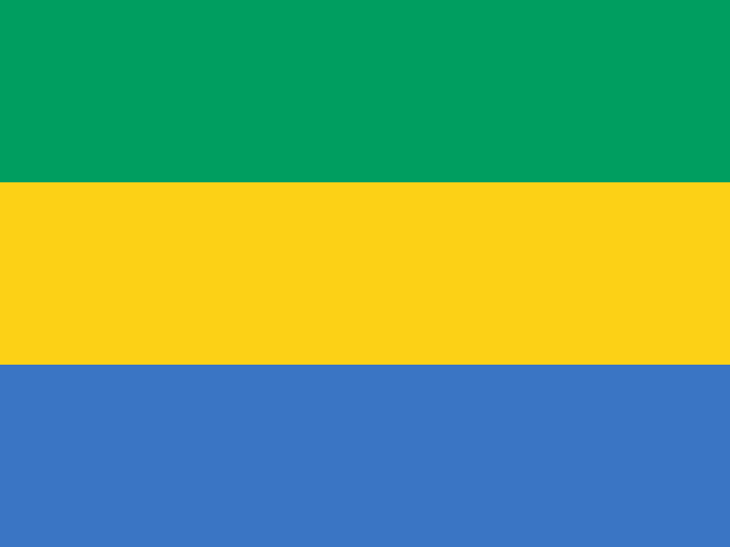

Gabão
 O Gabão, oficialmente República Gabonesa, é um país localizado na costa ocidental da África Central, banhado pelo Oceano Atlântico. Faz fronteira com Guiné Equatorial e Camarões ao norte, República do Congo a leste e sul, além de possuir uma extensa faixa costeira a oeste. Sua capital é Libreville, situada às margens do Atlântico. O país ocupa uma área de aproximadamente 267 mil km² e conta com uma população estimada em cerca de 2,3 milhões de habitantes. Apesar de ter uma população relativamente pequena em comparação com seu território, o Gabão é considerado um dos países mais ricos da África em termos de renda per capita, graças às suas abundantes reservas de petróleo, manganês e madeira. No entanto, enfrenta desafios relacionados à desigualdade social, desemprego e dependência econômica do petróleo. A sociedade gabonesa é formada principalmente por grupos étnicos bantus, como os Fang, Punu, Nzebi e Obamba, cada um preservando tradições, línguas e costumes próprios. O francês é a língua oficial, reflexo do período colonial, mas diversas línguas locais continuam sendo amplamente faladas no cotidiano.
História
A história do Gabão remonta a milhares de anos, com o assentamento de povos bantus que migraram para a região entre os séculos XIII e XVII, estabelecendo aldeias, sistemas agrícolas e formas de organização comunitária. Durante séculos, esses povos desenvolveram tradições próprias, baseadas em rituais espirituais, arte escultórica e estruturas sociais organizadas. A partir do século XV, navegadores portugueses foram os primeiros europeus a chegar à região, estabelecendo contatos comerciais principalmente relacionados ao marfim, madeira e, posteriormente, ao tráfico de escravos. Nos séculos seguintes, franceses, holandeses e ingleses também participaram das trocas comerciais na costa gabonesa.
No século XIX, a França consolidou sua presença na região, criando colônias e estabelecendo protetorados. Em 1910, o Gabão passou a integrar a África Equatorial Francesa, tornando-se um importante ponto de apoio para a administração colonial. A colonização trouxe grandes transformações sociais, econômicas e culturais, com a introdução do francês como língua administrativa e o fortalecimento da exploração de recursos naturais. Após a Segunda Guerra Mundial, o movimento independentista cresceu e, em 17 de agosto de 1960, o Gabão conquistou sua independência, com Léon M’ba como primeiro presidente. Seu sucessor, Omar Bongo, governou o país de 1967 até 2009, sendo um dos líderes africanos que permaneceu mais tempo no poder. Seu filho, Ali Bongo Ondimba, assumiu a presidência em 2009, mantendo a continuidade política da família Bongo até os dias atuais, embora com momentos de contestação popular e crises políticas. A história contemporânea do Gabão é marcada pela estabilidade relativa, embora existam tensões em torno da democracia, distribuição de riquezas e reformas sociais.
Cultura
A cultura do Gabão é profundamente ligada às tradições dos povos bantus que habitam o país. Uma das manifestações culturais mais conhecidas é a música e a dança, com ritmos vibrantes, uso de tambores e instrumentos de corda que acompanham cerimônias religiosas, rituais de passagem e festivais. O Gabão também é reconhecido por sua rica tradição espiritual, incluindo práticas animistas e rituais ligados ao culto de ancestrais e à natureza, muitas vezes mesclados ao cristianismo, religião predominante no país. Entre essas tradições, destaca-se o Bwiti, prática espiritual do povo Fang e Mitsogo, que combina música, dança, canto e uso ritual da planta iboga, considerada sagrada e utilizada em iniciações e cerimônias de cura.
A arte gabonesa é famosa por suas esculturas em madeira, máscaras rituais e estatuetas, que possuem forte valor simbólico e espiritual, sendo usadas em cerimônias e também apreciadas no mercado internacional. Na gastronomia, pratos típicos incluem ingredientes locais como mandioca, banana-da-terra, peixe, carne de caça e molho de amendoim. O francês, como língua oficial, serve como meio de comunicação unificado entre os diferentes grupos étnicos, mas o país mantém mais de 40 línguas locais em uso, como o fang, punu e nzebi. As tradições orais, como contos, provérbios e canções, também desempenham papel importante na transmissão cultural. Atualmente, o Gabão busca equilibrar suas tradições ancestrais com a modernidade urbana, visível principalmente em Libreville, onde convivem música moderna, arte contemporânea e influências globais.


Clima
O Gabão possui um clima equatorial, quente e úmido durante praticamente todo o ano, com temperaturas médias variando entre 24 °C e 28 °C. O país apresenta duas estações chuvosas e duas secas: a estação chuvosa longa, que vai de setembro a dezembro, e a curta, de fevereiro a maio; já as secas ocorrem entre junho e agosto (seca longa) e de dezembro a janeiro (seca curta). Essa configuração climática influencia diretamente a agricultura, a vida cotidiana e os ecossistemas do país. As regiões costeiras recebem chuvas intensas, o que favorece a vegetação densa, enquanto o interior mantém florestas tropicais de grande biodiversidade. A umidade constante e a abundância de chuvas tornam o Gabão um dos países mais verdes da África, com cobertura florestal superior a 80% do território.
No entanto, o clima também representa desafios, como enchentes em áreas urbanas durante a estação chuvosa e dificuldades na infraestrutura de transporte devido ao excesso de umidade. Por outro lado, essa mesma característica climática garante ao Gabão um enorme potencial para a conservação ambiental, manutenção de ecossistemas florestais e desenvolvimento de projetos de ecoturismo, cada vez mais relevantes para a economia do país.
Biodiversidade
O Gabão é considerado um dos países africanos mais ricos em biodiversidade, sendo muitas vezes chamado de “o pulmão verde da África”. Mais de 80% do território é coberto por florestas tropicais, que abrigam milhares de espécies de plantas e animais, muitas delas endêmicas. Entre os animais mais notáveis estão os gorilas-das-terras-baixas, chimpanzés, elefantes-da-floresta, leopardos, búfalos e inúmeras espécies de aves. A fauna aquática também é diversificada, com golfinhos, baleias e tartarugas marinhas que habitam sua extensa costa atlântica. A flora inclui árvores de grande porte, como o okoumé, amplamente explorado pela indústria madeireira, mas também protegido em áreas de conservação.
O país possui 13 parques nacionais criados em 2002, que juntos cobrem cerca de 11% do território nacional, incluindo o Parque Nacional de Loango, famoso por sua combinação de praias, savanas, florestas e manguezais, onde é possível observar elefantes, hipopótamos e gorilas em ambientes naturais próximos ao mar. Outro destaque é o Parque Nacional de Ivindo, que abriga uma das maiores quedas d’água da África, as Cataratas de Kongou. Esses parques reforçam a imagem do Gabão como um dos líderes em preservação ambiental na África, embora ainda enfrente pressões como exploração de recursos, caça ilegal e mudanças climáticas.


Cidades
As cidades do Gabão são relativamente pequenas em população, mas desempenham papéis estratégicos na economia e administração do país. Libreville, a capital e maior cidade, concentra a maior parte da população urbana, sendo o principal centro político, econômico e cultural. Localizada na costa, é também a porta de entrada do país, com o principal porto e aeroporto. A cidade abriga universidades, museus, centros comerciais e uma vida cultural que mescla tradições locais e influências modernas. Port-Gentil é a segunda maior cidade e o principal centro da indústria petrolífera do país, abrigando refinarias e empresas ligadas ao setor energético. Sua economia dinâmica faz dela um polo essencial para as finanças nacionais.
Outras cidades relevantes incluem Franceville, situada no interior, conhecida por sua importância histórica e por abrigar instituições científicas, como o Centro Internacional de Pesquisa Médica, e Oyem, no norte, que desempenha papel regional no comércio agrícola. Apesar de menos populosas, essas cidades são fundamentais para a integração territorial e para a diversificação econômica do Gabão. Entre elas, Libreville e Port-Gentil são as duas maiores e mais importantes, concentrando população, investimentos e infraestrutura.